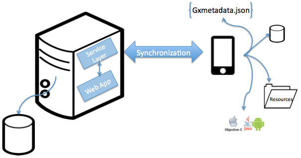

The Offline Native Mobile applications architecture has to consider two situations where these apps should work: when the application is disconnected and when it has a connection. In the first case, the app has to be able to process data and interact with a database without a network connection. In the second scenario, the app can synchronize data with the server by invoking web services. Connected or not, all the processing of the application is done on the device updating the local database. Once the connection is restored, synchronization will be executed. Architecture An Offline Native Mobile application can be split into two components: a local component and a server component. Both components (device and server) communicate via REST services to perform the required synchronization to fill the local database and to send the modifications performed on the device to the server. The communication between the Native Mobile application and the server is known as synchronization. Advanced conceptsRead the Advanced Concepts of Offline Applications architecture document to learn more about the Offline applications architecture. Note
|